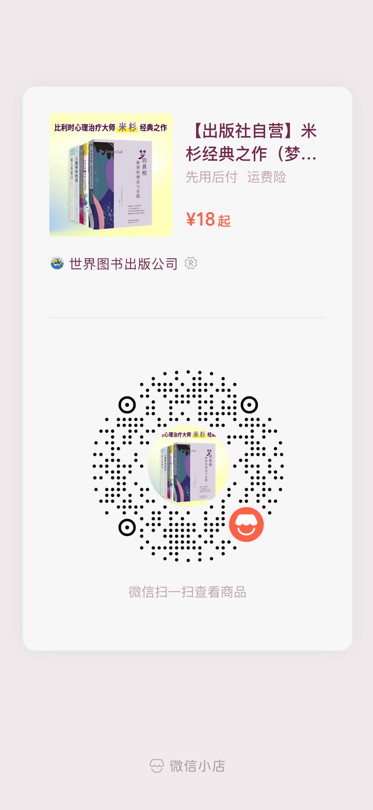

THE BOOKS
Emotional Intelligence Education for Children
emotional intelligence education for children

2022 · World Publishing Corporation
Emotional Intelligence Education for Children
A teaching guide for children’s social-emotional learning
Focusing on children's emotional and social abilities, we introduce teaching activities and leadership ideas that can be used in classrooms and groups.
Content introduction
emotional intelligence educationChildren need to be allowed to experience, express and practice in relationships. Aimed at educators and parents, this book discusses the organization, guidance, and reflection of activities, and brings learning back to real interaction.
This book focuses on
- Help children identify, express and understand feelings.
- Practice listening, cooperation, communication and responsibility through activities.
- Provide teachers and parents with ideas for group leadership and daily application.
Who should read it?
Ideal for elementary educators, children's activity leaders, and parents concerned with social-emotional learning.
bibliographic information
- Author
- Michel Claeys Michel Claeys Bouuaert
- Year of publication
- 2022
- publishing house
- World Publishing Corporation
- ISBN
- 9787519291464
WECHAT BOOKSHOP
Shop for Michel Claeys Books
Scan on WeChat and enter the World Publishing Corporation store to purchase Michel Claeys works.
When browsing on a mobile phone, you can long press the picture to identify it.
